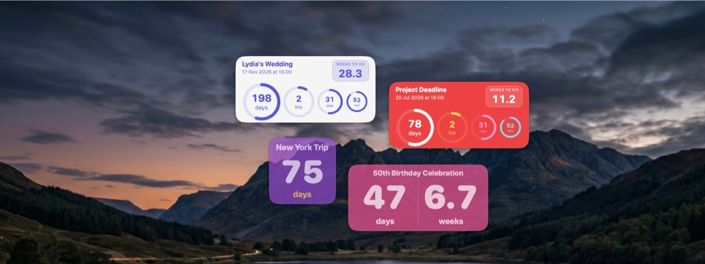
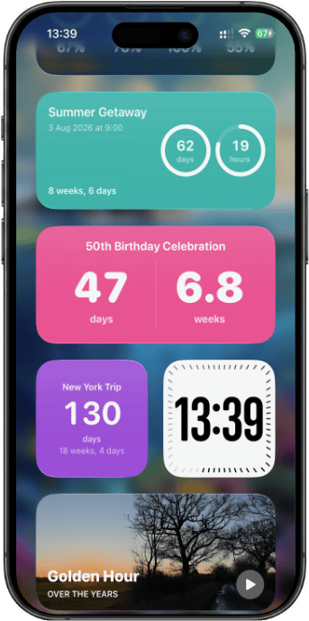

Always in view
Nothing to launchA Nearing countdown is a floating window on your desktop, not a row in a list you have to go and open. It sits where you are already looking, so you notice it without deciding to — nothing to launch, no menubar to click, no notification to dismiss.
Drag a widget to any connected display and it remembers where you put it. Keep it above your other windows if you want it to stay put.
The Days Ring
The shape of the wait, not just a numberThe large outer ring tracks the whole length of your wait, depleting as the event gets closer. It shows you the shape of the time remaining, not just a number counting down.
If you had already been waiting a while before you added the countdown, set a start date in the past and the ring reflects the real length of the wait rather than the moment you happened to type it in.

Spoken countdowns
It can tell you out loud.
Nearing reads the remaining time aloud, and changes what it says as the date approaches — weeks and days while the event is far off, down to hours, minutes and seconds on the final day.
Left to itself, it speaks up more often as you get closer, and always on the milestones: a week to go, a day, an hour. Prefer to decide yourself? Set a fixed interval instead, and use Quiet Hours to keep it silent overnight or while you're working.
On your iPhone and iPad
One app, one purchaseNearing is a single app across Mac, iPhone and iPad. Sign in to the same iCloud account and your countdowns appear by themselves — no export, no setup, no second purchase. Pin them to your Home Screen as widgets.
Countdowns are created and edited on the Mac. The iPhone and iPad app is for keeping them in view wherever you are.

Make it yours
Eleven colours · two sizesEleven background colours and two widget sizes, rainbow or single-colour rings, and adjustable opacity — so a countdown can sit quietly on your desktop instead of dominating it.
Pricing
One purchase covers all three devicesFree for your first three countdowns. Premium unlocks the rest, once.
The full breakdown of what Premium adds is in the support FAQ.
Requirements
macOS 13 · iOS 17Nearing requires macOS 13 Ventura or later on the Mac, and iOS 17 or later on iPhone and iPad.